River Network Distance Computation and Applications with riverdist
Limitations, notes, and caveats
Importing and displaying river network data
Basic distance calculation in a non-messy river network
Allowing different route-detection algorithms: a possible time-saver
Beyond individuals: summarizing or plotting at the dataset level
Editing a river network object, or fixing a messy one
Package overview
The ‘riverdist’ package is intended as a free and readily-available resource for distance calculation along a river network. This package was written with fisheries research in mind, but could be applied to other fields. The ‘riverdist’ package builds upon the functionality of the ‘sp’ and ‘rgdal’ packages, which provide the utility of reading GIS shapefiles into the R environment. What ‘riverdist’ adds is the ability to treat a linear feature as a connected network, and to calculate travel routes and travel distances along that network.
Typical workflow with ‘riverdist’
Import a linear shapefile using
line2network(). The shapefile to import must be a linear feature - converting a polygon feature to a line feature will result in an outline, which will not be useable. The shapefile to import should be as simple as possible. If GIS software is available, both trimming the shapefile to the same region as the study area and performing a spatial dissolve are recommended.Clean up the imported shapefile however necessary. Editing functions are provided, but the
cleanup()function interactively steps through all the editing functions in a good order, and is recommended in nearly all cases.Convert point data to river locations using
xy2segvert()orptshp2segvert(). This will snap each point to the nearest river network location.Perform all desired analyses.
Limitations, notes, and caveats
Care must be exercised in the presence of braided channels, in which multiple routes may exist between river locations. In these cases, the default route calculation provided by ‘riverdist’ will be the shortest travel route, but it is possible that the shortest travel route may not be the route of interest. Functions are provided to check for braiding, as well as select the route of interest. If no braiding is detected, route and distance calculation can switch to a more efficient algorithm.
Another important note is that only projected data can be used, both for river networks and for point data. The ‘riverdist’ environment in R does not share the ability of GIS software to project-on-the-fly, and treats all coordinates on a linear (rectangular) scale. Therefore, the projection of all data must also be the same.
Importing and displaying river network data
Converting XY data to river locations
Displaying point data in river locations
Importing a river network using line2network()
In a typical workflow, a user will first import a projected polyline shapefile using line2network(). This function reads the specified shapefile using the ‘sp’ and ‘rgdal’ packages, and adds the network connectivity, thus creating a river network object. If an unprojected shapefile is detected, an error will be generated. However, the reproject= argument allows the line2network() to re-project the shapefile before importing it as a river network.
While ‘riverdist’ does provide tools for editing a river network that do not rely on GIS software, it is strongly recommended to simplify the river shapefile as much as possible before importing into R. In particular, a spatial dissolve will likely be very helpful, if GIS software is available. This will create a few long line segments instead of many, many short segments.
library(riverdist)
MyRivernetwork <- line2network(path=".", layer="MyShapefile")
# Re-projecting in Alaska Albers Equal Area projection:
AKalbers <- "+proj=aea +lat_1=55 +lat_2=65 +lat_0=50 +lon_0=-154
+x_0=0 +y_0=0 +datum=NAD83 +units=m +no_defs +ellps=GRS80 +towgs84=0,0,0"
MyRivernetwork <- line2network(path=".", layer="MyShapefile", reproject=AKalbers)Displaying a river network using plot()
Basic plotting is provided using a method of the plot() function. See help(plot.rivernetwork) for additonal plotting arguments and graphical parameters. Shown below is the Gulkana River network, included as a dataset.
library(riverdist)
data(Gulk)
plot(x=Gulk)
Once the river network has been imported, some cleanup may be necessary, depending on the structure of the shapefile. Ideally, there should be one segment between each endpoint or junction node, and the spatial extent of the shapefile should be limited to the region or network of interest. If the user has GIS software available, it may be simplest to format the shapefile as desired before importing into R. However, functions are included for river network formatting in R if necessary. The cleanup() function interactively steps through the formatting functions in a good sequence, and may be a good way to get started. If there were spatial oddities with the parent shapefile (vertices out of order, or strange “jumps” in segments), the cleanup_verts() function interactively steps through each individual segment, providing a means to edit the vertices of each segment if needed.
abstreams_fixed <- cleanup(abstreams0)Checking connectedness using topologydots()
For route and distance calculation to work, the topologies must be correct, with all the right segments being treated as connected. The topologydots() function can check for this, and plots connected segment endpoints as green, and non-connected endpoints as red. This is shown below, and all appears good.
topologydots(rivers=Gulk)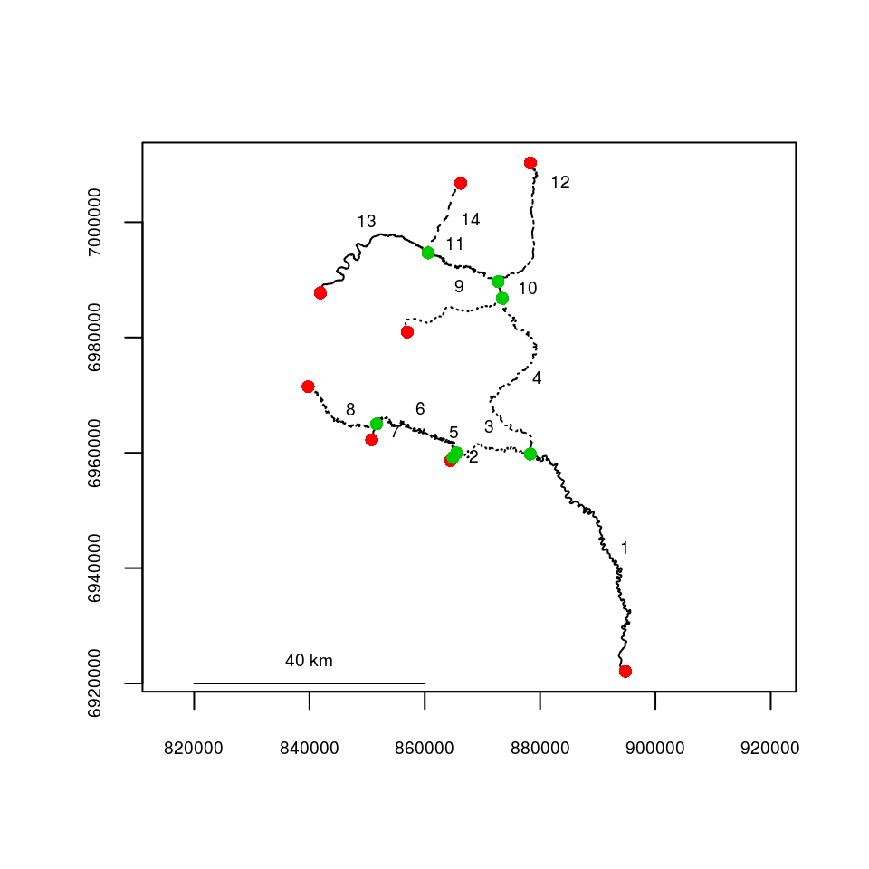
Converting XY data to river locations using xy2segvert() and pointshp2segvert()
Once an appropriate river network has been obtained, point data can be read. Function xy2segvert() converts XY data into river locations, by “snapping” each point to the closest segment and vertex. Because of this, river locations can only be used in the context of the river network they belong to. In addition to the river locations, the snapping distance for each observation is also returned.
The fakefish dataset includes coordinates from a sequence of telemetry flights.
data(fakefish)
fakefish_riv <- xy2segvert(x=fakefish$x, y=fakefish$y, rivers=Gulk)
head(fakefish_riv) # a look at the first few rows of the output## seg vert snapdist
## 1 1 595 329.34419
## 2 1 399 40.27721
## 3 1 352 402.52259
## 4 1 116 525.06623
## 5 1 806 355.32753
## 6 1 505 11.34949hist(fakefish_riv$snapdist, main="snapping distance (m)")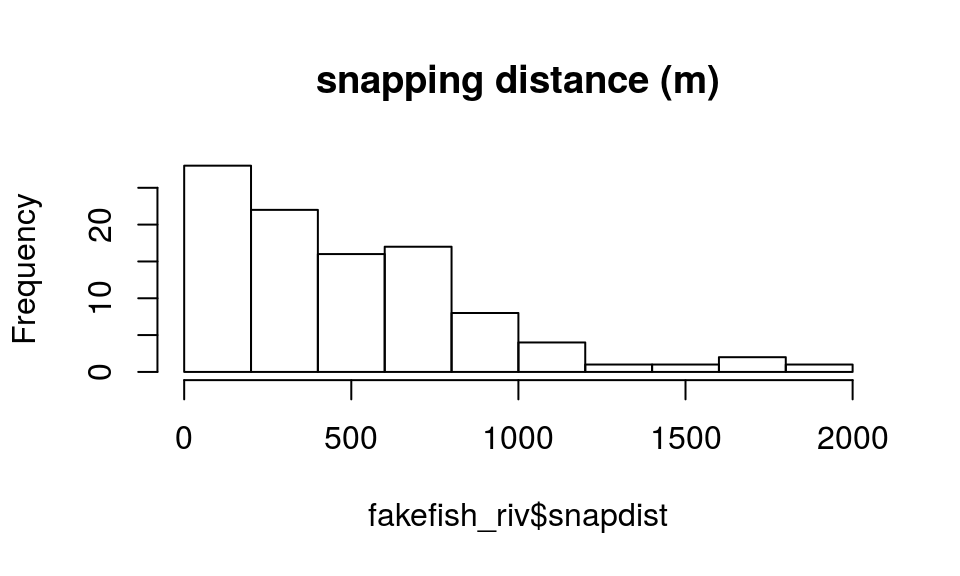
Spatial data can be read directly from a point shapefile using pointshp2segvert(), which returns the resulting river locations added to the data table from the point shapefile.
segvert_from_shp <- pointshp2segvert(path=".", layer="MyPointShapefile",
rivers=MyRivernetwork)Displaying point data in river locations using riverpoints()
The riverpoints() function works essentially like points() to overlay point data on an existing plot, but using river locations (segment and vertex). The zoomtoseg() function produces a plot zoomed to the specified segment number, or vector of segment numbers.
In the plot below, the raw coordinates are displayed as red circles and the river locations are displayed as blue squares.
zoomtoseg(seg=c(11, 14), rivers=Gulk)
points(fakefish$x, fakefish$y, pch=16, col="red")
riverpoints(seg=fakefish_riv$seg, vert=fakefish_riv$vert, rivers=Gulk, pch=15,
col="blue")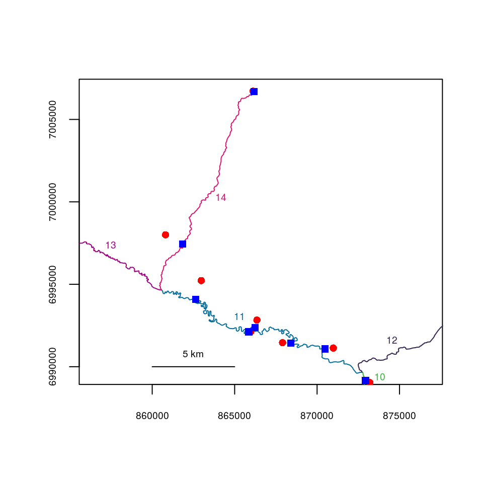
Basic distance calculation in a non-messy river network
Computing network distances between sequential observations of individuals
Computing a matrix of network distances between all observations of an individual
Computing minimum observed home range for individuals
Computing a matrix of network distances between all observations
Computing a matrix of network distances between all observations of two different datasets
Computing network distance using riverdistance()
River network distance can be calculated directly with the riverdistance() function. The riverdistance() function calls detectroute() internally, which the user will probably never need, but usage is shown below. The riverdistance() function needs river locations (segment and vertex) for both starting and ending locations. Specifying map=TRUE as shown below is not necessary, but can provide a check to verify that the function is working properly.
# starting location: segment 7, vertex 49
# ending location: segment 14, vertex 121
detectroute(start=7, end=14, rivers=Gulk)## [1] 7 6 3 4 10 11 14riverdistance(startseg=7, startvert=49, endseg=14, endvert=121, rivers=Gulk, map=TRUE)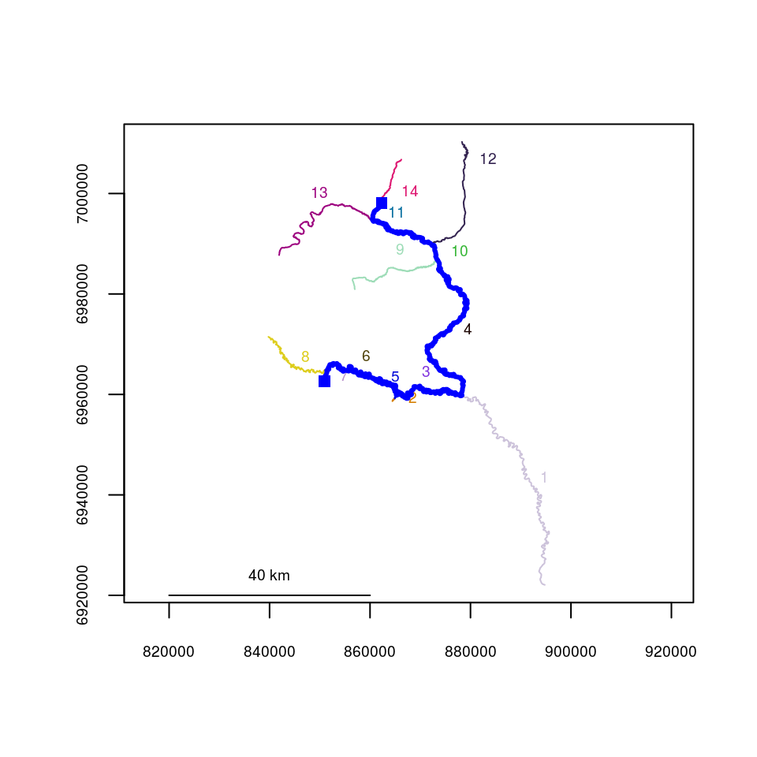
## [1] 155435.2Computing network distances between sequential observations of individuals using riverdistanceseq()
River distance can be calculated manually between any two connected locations on a river network. However, a few common summary analyses were automated and are included in ‘riverdist’. First, the riverdistanceseq() function returns a matrix of the distances between sequential observations for a set of individuals observed multiple times. In the example below, three fish were observed (or not) during 5 telemetry flights. The dataset is shown first, then the output from riverdistanceseq(). Fish number 1 traveled 83.87 km between flights 3 and 4, and was not observed during flight 2.
data(smallset)
smallset## seg vert id flight
## 1 10 12 1 1
## 2 2 17 1 3
## 3 10 15 1 4
## 4 1 641 1 5
## 5 6 258 2 1
## 6 11 393 2 2
## 7 2 26 2 3
## 8 9 354 2 4
## 9 4 472 2 5
## 10 2 25 3 1
## 11 9 137 3 2
## 12 9 181 3 4riverdistanceseq(unique=smallset$id, survey=smallset$flight, seg=smallset$seg,
vert=smallset$vert, rivers=Gulk)## 1 to 2 2 to 3 3 to 4 4 to 5
## 1 NA NA 83872.62 70277.57
## 2 127558.14 109561.1 94177.71 26741.99
## 3 86983.02 NA NA NAComputing a matrix of network distances between all observations of an individual using riverdistancematbysurvey()
River distance can also be calculated between all observations of a single individual. In the output matrix shown below for individual 1, the element with row identifier 1 and column identifier 3 represents the river distance from the location observed in survey 1 to the location observed in survey 3, calculated as 83.6 km. An important note is that the distances reported are net distance between locations, and are not intended to be cumulative. Specifying full=TRUE reports an output matrix that includes all observations, with values of NA if the individual was not observed. This allows the output matrices for multiple individuals to have the same rows and columns, thus being directly comparable.
riverdistancematbysurvey(indiv=1, unique=smallset$id, survey=smallset$flight,
seg=smallset$seg, vert=smallset$vert, rivers=Gulk, full=FALSE)## 1 3 4 5
## 1 0.0000 83588.99 283.6307 69993.94
## 3 83588.9911 0.00 83872.6219 45678.35
## 4 283.6307 83872.62 0.0000 70277.57
## 5 69993.9398 45678.35 70277.5705 0.00Computing minimum observed home range for individuals using homerange()
The minimum observed (linear) home range for each individual can be calculated using homerange().
# calculating observed minimum home range for all individuals
homerange(unique=smallset$id, seg=smallset$seg, vert=smallset$vert, rivers=Gulk)## Minumum home ranges associated with each individual
##
## ID range
## 1 1 99914.27
## 2 2 141136.24
## 3 3 88669.52Maps can be produced by calling plot() on an object returned from homerange(). Specifying cumulative=TRUE will create plots with line thickness varying by the number of times an individual would have traveled a given section of river. For a cumulative plot, either a vector of survey identifiers must be used, or else the data locations must be in chronological order for each individual.
par(mfrow=c(1,3))
ranges <- homerange(unique=smallset$id, survey=smallset$flight,
seg=smallset$seg, vert=smallset$vert, rivers=Gulk)
plot(ranges)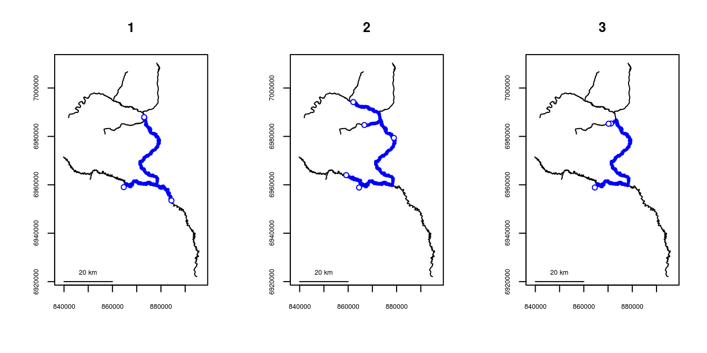
plot(ranges, cumulative=TRUE, label=TRUE, col=3)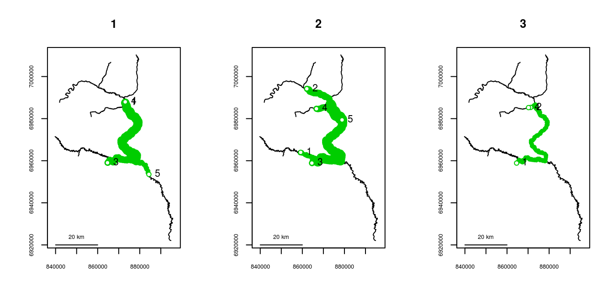
The overlap between the respective home ranges of all individuals can be described using homerangeoverlap() This returns three matrices: first, the linear distance represented in the union of the home ranges of each pair of individuals ($either), then the linear distance represented in the intersection ($both), then the proportional overlap ($prop_both), defined as intersection/union. Approximately 78% of the linear home range occupied by either individual 1 or 3 is shared by both of them.
The amount of overlap in home ranges can also be plotted using plothomerangeoverlap().
homerangeoverlap(ranges)## $either
## 1 2 3
## 1 99914.27 157177.9 106065.85
## 2 157177.89 141136.2 141136.24
## 3 106065.85 141136.2 88669.52
##
## $both
## 1 2 3
## 1 99914.27 83872.62 82517.95
## 2 83872.62 141136.24 88669.52
## 3 82517.95 88669.52 88669.52
##
## $prop_both
## 1 2 3
## 1 1.0000000 0.5336159 0.7779879
## 2 0.5336159 1.0000000 0.6282548
## 3 0.7779879 0.6282548 1.0000000plothomerangeoverlap(ranges)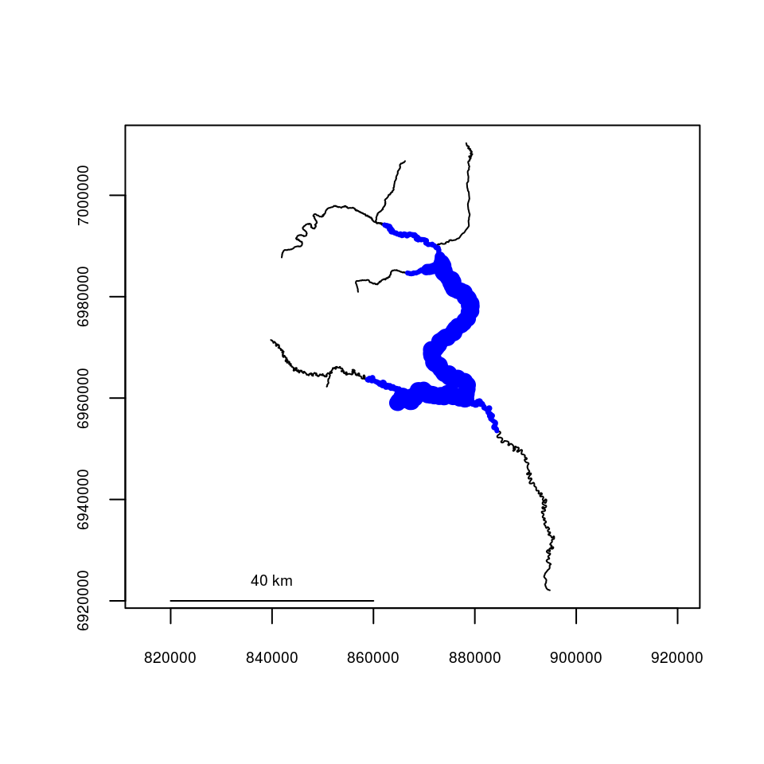
Computing a matrix of network distances between all observations using riverdistancemat()
A matrix of the river network distance between every observation and every other observation can also be calculated using riverdistancemat(). A use for this function might be if the user wishes to calculate all distances at once, and subset later.
dmat <- riverdistancemat(smallset$seg,smallset$vert,Gulk)
round(dmat)[1:7,1:7] # only showing the first 7 rows & columns for clarity## 1 2 3 4 5 6 7
## 1 0 83589 284 69994 101953 25605 83956
## 2 83589 0 83873 45678 22200 109194 367
## 3 284 83873 0 70278 102236 25322 84239
## 4 69994 45678 70278 0 64042 95599 46045
## 5 101953 22200 102236 64042 0 127558 22567
## 6 25605 109194 25322 95599 127558 0 109561
## 7 83956 367 84239 46045 22567 109561 0The logical argument can be used for subsetting, if the full network distance matrix is not needed. This capability is shown below, calculating the distance matrix only for observations occurring on segment number 2. The ID argument can be used with a vector of observation labels, to display row and column labels that may be easier to interpret than observation indices.
logi1 <- (smallset$seg==2)
# constructing observation labels
obsID <- paste0("id",smallset$id,"-flight",smallset$flight)
riverdistancemat(seg=smallset$seg, vert=smallset$vert, rivers=Gulk, logical=logi1,
ID=obsID)## id1-flight3 id2-flight3 id3-flight1
## id1-flight3 0.0000 366.62343 326.28884
## id2-flight3 366.6234 0.00000 40.33459
## id3-flight1 326.2888 40.33459 0.00000Computing a matrix of network distances between all observations of two different datasets using riverdistancetofrom()
A matrix of river network distance between two location datasets can be calculated using riverdistancetofrom(), which can be similarly subsetted using the logical1 and logical2 arguments. Row and column names can be added using the ID1 and ID2 arguments.
An example of the use of this function might be computation of distance between observations of instrumented fish and a set of fixed river locations, such as contaminant sites. In this case, a similar function upstreamtofrom() (discussed later) might be used, which would give the means to calculate up- or downstream distance from contaminant sites, with the option of examining flow-connectedness.
streamlocs.seg <- c(2,2,2)
streamlocs.vert <- c(10,20,30)
streamlocs.ID <- c("loc A","loc B","loc C")
logi2 <- (smallset$seg==2)
obsID <- paste0("id",smallset$id,"-flight",smallset$flight)
riverdistancetofrom(seg1=streamlocs.seg, vert1=streamlocs.vert, seg2=smallset$seg,
vert2=smallset$vert, ID1=streamlocs.ID, ID2=obsID, logical2=logi2,
rivers=Gulk)## id1-flight3 id2-flight3 id3-flight1
## loc A 129.95819 496.5816 456.2470
## loc B 99.42056 267.2029 226.8683
## loc C 479.65380 113.0304 153.3650Incorporating flow direction
Defining flow direction of a river network
Calculating flow direction and directional network distance
Automations of flow direction and directional network distance
Defining flow direction of a river network using setmouth()
Flow direction and directional (upstream) distance can also be calculated. For this to be accomplished, the segment and vertex of the river “mouth”, or lowest point must first be identified. The segment containing the river mouth can be visually identified from a plot of the river network. In the Gulkana River example, the lowest segment happens to be segment 1. Identifying the lowest vertex of segment 1 can be done using the plot produced by showends(), shown below. In this case, the mouth vertex happens to be vertex 1. This will not necessarily be the case. After importing a shapefile into R, the segment vertices will be stored in sequential order, but not necessarily by flow direction. Specifying the segment and vertex coordinates of the river network mouth can be done using setmouth() as shown below, though it can also be set manually by direct assignment.
showends(seg=1,rivers=Gulk)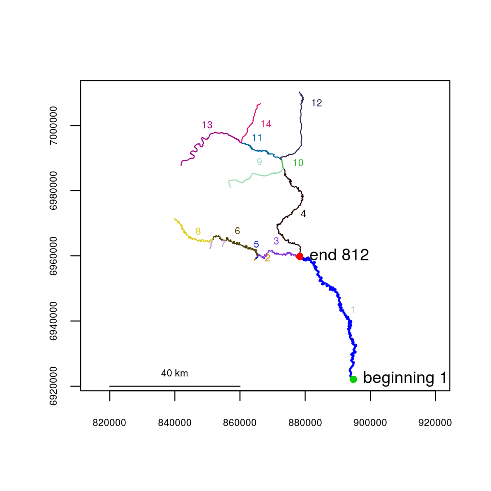
Gulk1 <- setmouth(seg=1, vert=1, rivers=Gulk)Calculating flow direction using riverdirection() and directional network distance using upstream()
If the flow direction has been established by specifying the river network mouth, river direction can be calculated using riverdirection(), and upstream distance can be calculated using upstream(). If the input river locations are flow-connected, riverdirection() returns “up” if the second location is upstream of the first and “down” if downstream. In the flow-connected case, upstream() returns the network distance as positive if the second location is upstream of the first, and negative if downstream. If the input locations are not flow-connected, riverdirection() returns “up” if the total upstream distance is greater than the total downstream distance, and “down” otherwise. In the non flow-connected case, upstream distance in upstream() can return one of two things, depending on the user’s research intent. Specifying net=TRUE will return the “net” distance (upstream distance - downstream distance between the two locations). Specifying net=FALSE (the default) will return the total distance between the two locations, with the sign depending on whether the upstream distance exceeds the downstream distance.
For example, the route between two points goes downstream along a river for 100m, then up 20m on a tributary. Specifying net=TRUE will return a distance of -80m. Specifying net=FALSE will return a distance of -120m.
Specifying flowconnected=TRUE in both riverdirection() and upstream() will only return distances or directions if the input locations are flow-connected, and will return NA otherwise.
zoomtoseg(seg=c(6,3), rivers=Gulk)
riverpoints(seg=c(6,4), vert=c(250,250), col=4, pch=15, rivers=Gulk1)
#riverdistance(startseg=6, endseg=4, startvert=250, endvert=250, rivers=Gulk1, map=TRUE)
text(c(859122.4, 872104.1), c(6964127.4,6969741.0), pos=c(3, 4),
labels=c("beginning", "end"))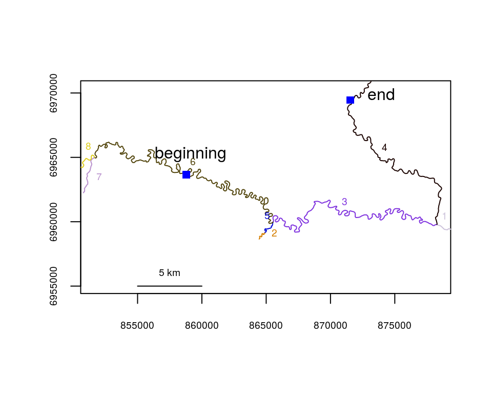
riverdirection(startseg=6, endseg=4, startvert=250, endvert=250, rivers=Gulk1)## [1] "down"upstream(startseg=6, endseg=4, startvert=250, endvert=250, rivers=Gulk1, net=FALSE)## [1] -66235.32upstream(startseg=6, endseg=4, startvert=250, endvert=250, rivers=Gulk1, net=TRUE)## [1] -28636.75upstream(startseg=6, endseg=4, startvert=250, endvert=250, rivers=Gulk1,
flowconnected=TRUE)## [1] NAAutomations of flow direction and directional network distance
River direction and upstream distance are also applied in functions riverdirectionseq() and upstreamseq() which work like riverdistanceseq(), riverdirectionmatbysurvey() and upstreammatbysurvey() which work like riverdistancematbysurvey(), riverdirectionmat() and upstreammat() which work like riverdistancemat(), and riverdirectiontofrom and upstreamtofrom which work like riverdistancetofrom. The upstreamseq(), upstreammatbysurvey(), and upstreammat() use the additional net= argument, and all river direction and upstream distance functions use the additional flowconnected= argument.
Allowing different route-detection algorithms: a possible time-saver
Currently three algorithms are implemented to detect routes between river locations, with the functions automatically selecting the most appropriate unless another is specified. Dijkstra’s algorithm is used by default (algorithm="Dijkstra"), which returns the shortest route in the presence of braiding. The sequential algorithm (algorithm="sequential") may be used, which returns the first complete route detected. The sequential algorithm is much slower and is not recommended in nearly all cases, but is retained as an option for certain checks.
If many distance calculations or a more sophisticated analysis is to be conducted, it is highly recommended to run buildsegroutes(), allowing algorithm="segroutes" to be used. This adds route and distance information to the river network object, greatly simplifying distance calculation, and reducing processing time for each distance calculation. The buildsegroutes() function also includes an option to calculate a distance lookup table as well. This may take a few seconds to run, but will reduce computation times even further - cutting the already-fast segment route algorithm time by 50-80%. Lookup tables can be calculated directly using buildlookup(), but may be extremely slow to calculate without running buildsegroutes() first.
In the example below, distance is calculated between the two points in a complex river network, using all three route detection algorithms, and calculating the time requirement for a single calculation.
data(abstreams)
tstart <- Sys.time()
riverdistance(startseg=120, startvert=10, endseg=131, endvert=10, rivers=abstreams,
algorithm="sequential")## [1] 68937.76Sys.time()- tstart## Time difference of 0.2916193 secststart <- Sys.time()
riverdistance(startseg=120, startvert=10, endseg=131, endvert=10, rivers=abstreams,
algorithm="Dijkstra")## [1] 68937.76Sys.time()- tstart## Time difference of 0.004442215 secststart <- Sys.time()
riverdistance(startseg=120, startvert=10, endseg=131, endvert=10, rivers=abstreams)## [1] 68937.76# Note: it is not necessary to specify the algorithm here: the distance function
# will automatically select the fastest algorithm unless otherwise specified.
Sys.time()- tstart## Time difference of 0.001503468 secsIn this case, building segment routes and distance lookup tables takes a little more than a second, even with a fairly complex river network. Calculating a single distance afterwards takes about 80 microseconds using segment routes and about 25 microseconds using the lookup tables. This dramatically saves time if multiple distances are to be computed, such as in a large matrix of distances, or multiple analyses. Kernel density and K-function analysis is probably prohibitively slow otherwise.
Beyond individuals: summarizing or plotting at the dataset level
Calculating and plotting kernel density
Spatial data spread for each flight event
Plotting clustering or dispersal using K-functions
Plotting a summary matrix or distance sequence
Plotting all upstream movements
Calculating and plotting kernel density using riverdensity() and plotriverdensity()
A method has been provided to display kernel density calculated from point data, using river network distance. The makeriverdensity() function calculates scaled kernel density at approximately regularly-spaced river network locations, with the linear resolution specified by the optional resolution= argument. A gaussian (normal) kernel is used by default, but a rectangular (simple density) kernel can be used as well. The survey= argument may also be used with a vector of survey identifiers corresponding to the point data. If the survey= argument is used, makeriverdensity() will calculate separate densities for each unique survey, and a method of plot() will produce a separate plot for each unique survey.
The plot() function method can display densities using line thickness, color, or both. For additional plotting arguments including possible color ramps, see ?plot.riverdensity.
Densities for nine of the ten Fakefish surveys are shown below.
data(Gulk, fakefish)
fakefish_density <- makeriverdensity(seg=fakefish$seg, vert=fakefish$vert, rivers=Gulk,
survey=fakefish$flight.date, resolution=2000, bw=10000)
par(mfrow=c(3,3))
plot(x=fakefish_density, ramp="blue", dark=0.85, maxlwd=15,
whichplots=c(1:8,10)) # showing only nine plots for clarity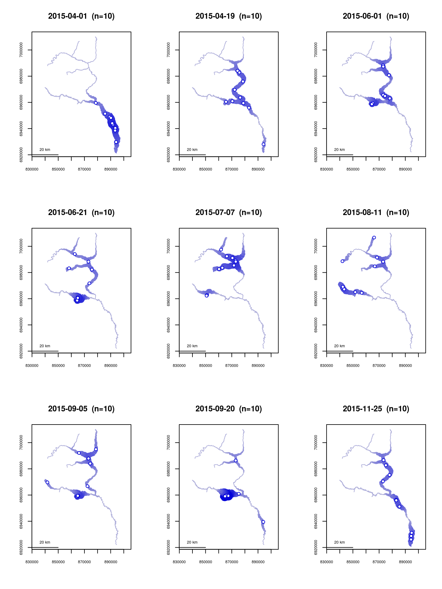
An alternate use of homerange() to give the spatial data spread for each flight event
The homerange() function could also be used to give a measure of the spatial spread of observations for each flight event, by using the flight identifier instead of individual identifier in the unique= argument.
In this case, the observations are the most closely spaced in the first flight event, and the most widely spaced in the August 11 flight event. Interestingly, the density plot of the August 11 flight shows many of the the individuals to be located near one another, but spread to multiple tributaries, with little presence in between. Considering this event to be the largest spread may still be appropriate, depending on the study, since all individuals were observed as concentrated in the lower mainstem on April 1.
x <- homerange(unique=fakefish$flight.date, seg=fakefish$seg, vert=fakefish$vert, rivers=Gulk)
x## Minumum home ranges associated with each individual
##
## ID range
## 1 2015-04-01 66026.33
## 2 2015-04-19 145231.00
## 3 2015-06-01 84856.73
## 4 2015-06-21 136195.56
## 5 2015-07-07 176480.46
## 6 2015-08-11 235446.27
## 7 2015-09-05 171769.53
## 8 2015-09-20 130524.91
## 9 2015-10-29 140431.19
## 10 2015-11-25 124827.73plot(x$range, type='b', xaxt='n', xlab="", ylab="range (m)", cex.axis=.6)
axis(1,at=1:10,labels=sort(unique(fakefish$flight.date)), cex.axis=.6, las=3)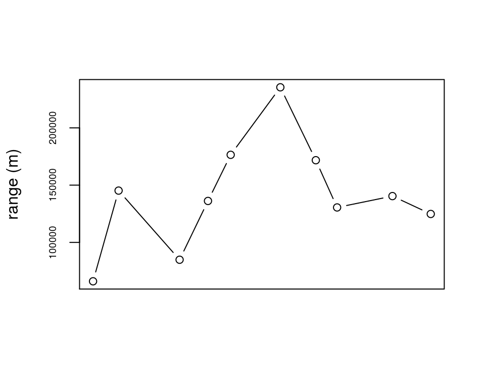
Plotting clustering or dispersal using K-functions, with kfunc()
K-functions, defined here as the average proportion of additional individuals located within a given distance of each individual, can be a useful tool for investigating evidence of clustering or dispersal. Calling kfunc() and specifying the flight indentifier will result in a sequence of plots, each displaying the K-function associated with each survey.
Unless otherwise specified, each plot will be overlayed with a confidence envelope, calculated by resampling all within-survey distances, thus creating a null distribution under the assumption that clustering is independent of survey. Thus, a K-function above the envelope at a small distance range can be seen as evidence that locations were more clustered than expected for that survey; conversely, a K-function below the envelope at a small distance range can be seen as evidence that locations were more dispersed than expected for that survey.
The plots below show relatively high amounts of clustering for the 2015-04-01 and 2015-09-20 surveys. The 2015-07-07 and especially 2015-08-11 surveys show possible clustering at small distances and very strong dispersal at medium distances, which can be corroborated with the density maps shown above..
par(mfrow=c(3,3))
kfunc(seg=fakefish$seg, vert=fakefish$vert, rivers=Gulk, survey=fakefish$flight.date,
maxdist=200000, whichplots=c(1:8,10)) # showing only nine plots for clarity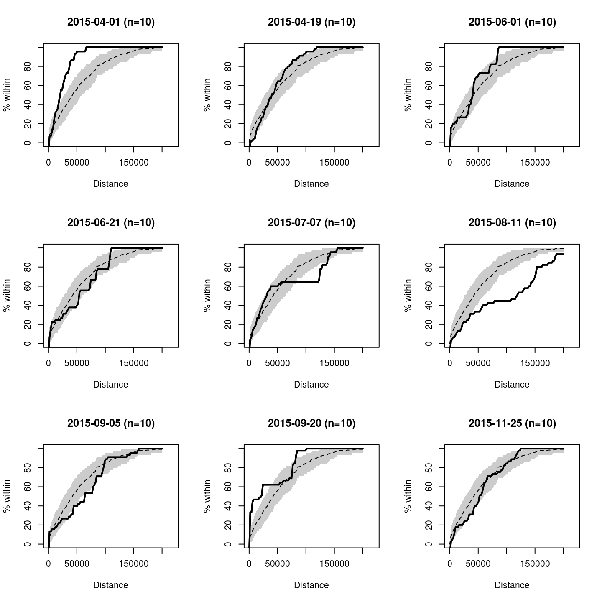
Summarizing up-river position, defined as distance from mouth, using mouthdist() for one observation and mouthdistbysurvey() for a dataset
In some cases, a meaningful summary measure may be the up-river position of each observation. Distance between an individual observation and the river mouth can be calculated using mouthdist(). In the case of multiple observations of a set of individuals, a summary matrix can be calculated using mouthdistbysurvey(), which returns a matrix of distances from the river mouth, with each row corresponding to a unique individual and each column corresponding to a unique survey.
mouthdist(seg=fakefish$seg[1], vert=fakefish$vert[1], rivers=Gulk)## [1] 56016.35x <- mouthdistbysurvey(unique=fakefish$fish.id, survey=fakefish$flight,
seg=fakefish$seg, vert=fakefish$vert, rivers=Gulk)
round(x)## 1 2 3 4 5 6 7 8 9 10
## 1 26535 121619 NA 131182 162899 NA NA 105966 101516 65373
## 2 10333 NA NA 105166 NA NA NA 99972 NA NA
## 3 NA 7581 106455 NA 150986 164013 125509 106237 102427 14046
## 4 NA 108482 117334 NA 145338 131182 146021 NA NA 4878
## 6 NA 125610 NA NA NA 165423 105344 NA 108398 NA
## 7 10153 75961 88672 155589 131218 NA NA NA NA NA
## 8 56016 NA 106901 NA NA NA 166606 104745 95707 64041
## 9 46998 96425 130164 106331 NA NA NA 105344 NA 122739
## 10 36393 NA NA 99958 132170 NA NA 82537 75916 NA
## 11 76180 NA NA NA NA 139313 NA 104850 11434 107265
## 12 NA 63984 NA 106901 NA NA 130796 NA NA 97886
## 13 NA NA NA 120679 145370 174795 142849 NA NA NA
## 14 31502 NA 80465 105835 144800 140778 106050 NA 126070 56293
## 15 NA 92050 131218 NA 147101 130009 NA NA 52751 NA
## 16 45619 NA NA NA NA NA 106656 104879 117856 8714
## 17 38397 NA 105165 NA 133124 160212 NA NA NA NA
## 18 NA 83037 86457 153561 NA NA 90940 NA NA 129706
## 19 NA 103833 NA 107267 NA 196411 NA 130493 89983 NA
## 20 NA NA 106260 NA 136400 141994 104879 29574 NA NAPlotting the summary matrix from mouthdistbysurvey() or other distance sequence using plotseq()
The resulting matrix of up-river position returned from mouthdistbysurvey(), or another distance sequence returned from riverdistanceseq() or upstreamseq(), can be plotted using plotseq(). A few types of plots are available, with two shown below. Additional type= arguments can be seen by calling ?plotseq.
The user is cautioned to use any plots returned as descriptive tools only, as ANOVA-type inference would likely be inappropriate without accounting for repeated-measures and/or serial autocorrelation.
In the example below, the plot shows evidence of the instrumented fish beginning the sampling period near the river mouth, then migrating upriver, and finally ending the sampling period near the mouth.
x <- mouthdistbysurvey(unique=fakefish$fish.id, survey=fakefish$flight.date,
seg=fakefish$seg, vert=fakefish$vert, rivers=Gulk)
par(mfrow=c(1,2))
plotseq(seqbysurvey=x)
plotseq(seqbysurvey=x, type="dotline")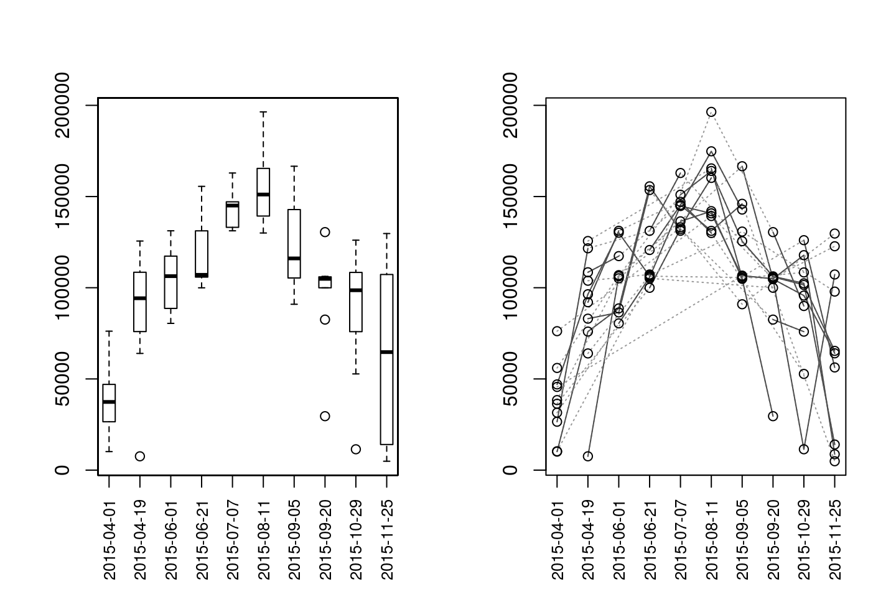
par(mfrow=c(1,1))Depending on the study, plotseq() may be useful in plotting the upstream distance between observations of all individual, as calculated in upstreamseq(). It is worth noting that the outputs from both upstreamseq() and riverdistanceseq() may have many empty cells, if individuals were missed on any flights. For the purpose of clarity, the default plot type is used below, which produces boxplots. However, in this case, a jittered dotplot may be more appropriate due to the small sample sizes, and can be produced by specifying type="dotplot".
In this case, the plots show evidence that movement was generally up-river between flights 1 and 2 and between flights 2 and 3, that there was the greatest variability in upstream movement between flights 5 and 6, and that movement was generally down-river in the latter part of the study.
x <- upstreamseq(unique=fakefish$fish.id, survey=fakefish$flight, seg=fakefish$seg,
vert=fakefish$vert, rivers=Gulk)
round(x)## 1 to 2 2 to 3 3 to 4 4 to 5 5 to 6 6 to 7 7 to 8 8 to 9 9 to 10
## 1 95084 NA NA 31717 NA NA NA -54220 -36143
## 3 NA 98874 NA NA 161737 -136261 -78484 -3810 -88381
## 4 NA 8852 NA NA -14156 14839 NA NA NA
## 6 NA NA NA NA NA -62068 NA NA NA
## 7 65807 12711 66918 -24372 NA NA NA NA NA
## 8 NA NA NA NA NA NA -62652 -9038 -31666
## 9 49427 33739 -83233 NA NA NA NA NA NA
## 10 NA NA NA 32212 NA NA NA -6621 NA
## 11 NA NA NA NA NA NA NA -93416 95831
## 13 NA NA NA 112787 166903 -52141 NA NA NA
## 14 NA NA 33038 41936 -132316 -93566 NA NA -69777
## 15 NA 70005 NA NA -123847 NA NA NA NA
## 16 NA NA NA NA NA NA -1777 69473 -109142
## 17 NA NA NA NA 140074 NA NA NA NA
## 18 NA 3419 67104 NA NA NA NA NA NA
## 19 NA NA NA NA NA NA NA -67214 NA
## 20 NA NA NA NA 125132 -38174 -75305 NA NA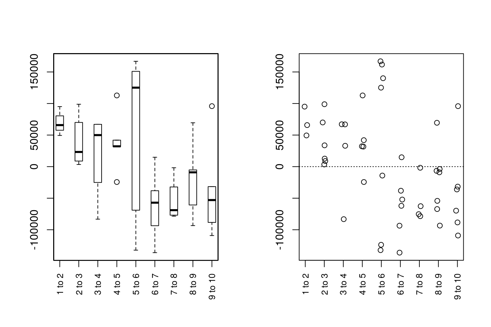
Plotting all upstream movements using matbysurveylist() and plotmatbysurveylist()
In a more generalized application, the matbysurveylist() function calculates the distances or upstream distances, between each pair of observation events, for all individuals. Functionally, this is a summary of the outputs of riverdistancematbysurvey() or upstreammatbysurvey(), but for all individuals in a dataset. The output from matbysurveylist() can then be plotted using plotmatbysurveylist(), providing a one-plot summary of all movements within a dataset. It is recommended to use the default method="upstream" in matbysurveylist(), which calculates directional (upstream) distances, which will result in a more informative plot.
The output plot is the upper triangle of a matrix of plots, in which plot [i,j] represents the upstream distances traveled between observation i and observation j, for all individuals observed in those observations. Each plot is overlayed with a horizontal line at an upstream distance of zero, for an illustration of up-river or down-river movement trend for that pairwise movement. It is worth noting that all sequential pairings of events (first to second, second to third, etc.) fall on the lower edge of the triangle, and this sequence of plots is the same as those given by plotseq() in the previous example.
Three types of plots can be produced using the type= argument. The default boxplot type (type="boxplot") is shown below. Alternately, if the type= argument is set to "confint", each plot gives a line showing the extent of an approximate 95% confidence interval for the mean upstream distance traveled. Inference should be made with caution, as sample sizes are likely to be small, and no attempt has been made at using a family-wise confidence level. However, plotting confidence intervals may be further illustrative of trend. A jittered dotplot may be produced by specifying type="dotplot", which will be the most appropriate in the case of small sample sizes. The default boxplot is shown below for the purpose of clarity, but a jittered dotplot would likely be a better choice in this instance.
matbysurveylist <- matbysurveylist(unique=fakefish$fish.id, survey=fakefish$flight, seg=fakefish$seg,
vert=fakefish$vert, rivers=Gulk)
plotmatbysurveylist(matbysurveylist)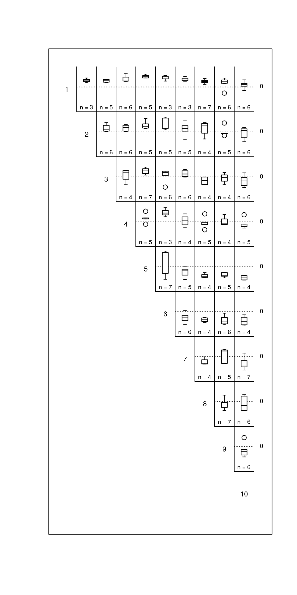
Editing a river network object, or fixing a messy one
All-purpose river network cleanup
Issue: the river network contains unneeded or unconnected segments
Issue: the river network contains sequential “runs” of segments that do not otherwise branch
Issue: the river network segments do not break where they should
Issue: segments that should connect do not
Issue: the river network contains segments that are smaller than the connectivity tolerance
Issue: A long straight-line section of the river network does not contain vertices between endpoints
Ideally, the shapefile used to define a river network object should be refined in GIS before importing into R. That being said, there are sure to be instances in which it is advantageous or necessary to make changes to the river network object within R.
All-purpose river network cleanup using cleanup()
In many cases, the cleanup() function will be the recommended first step in fixing a messy river network object after importing it. The cleanup() function should be called within the console, and interactively calls the editing functions in sequence. It then returns a new, edited river network object which can be edited further, or used as is. It may even be the most straightforward to call cleanup() multiple times. If there were spatial oddities with the parent shapefile (vertices out of order, or strange “jumps” in segments), the cleanup_verts() function interactively steps through each individual segment, providing a means to edit the vertices of each segment if needed.
Usage will look like
data(abstreams0) # a messy river network
abstreams_fixed <- cleanup(abstreams0) # fixing many problemsIssue: the river network contains unneeded or unconnected segments - fixes using trimriver(), trimtopoints(), and removeunconnected()
This is a very likely issue, particularly if the network was imported without changes in a GIS environment. River network segments can be manually removed using trimriver(), as shown below. Using the argument trim= removes the specified segments, and using the argument trimto= removes all but the specified segments. The example below is fairly simplistic, but illustrates the usage of the trim= and trimto= arguments.
Gulk_trim1 <- trimriver(trim=c(10,11,12,13,14), rivers=Gulk)
Gulk_trim2 <- trimriver(trimto=c(10,11,12,13,14), rivers=Gulk)
par(mfrow=c(1,3))
plot(x=Gulk, main="original")
plot(x=Gulk_trim1, main="trim=c(10,11,12,13,14)")
plot(x=Gulk_trim2, main="trimto=c(10,11,12,13,14)")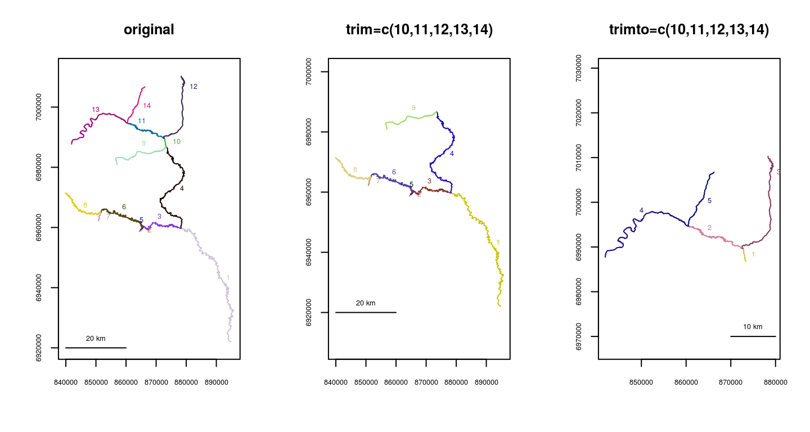
It is also possible to trim a river network to include only segments that are within a spatial tolerance of a set of X-Y points. The trimtopoints() function offers three methods of doing this. Specifying method="snap" (the default) returns a river network made up only of the closest segments to the input points. This is the simplest method, but may result in spatial gaps, as shown in the example below. Specifying method="snaproute" returns a network of the closest segments to the input points, but also includes any segments necessary to maintain a connected network. Specifying method="buffer" returns a river network made up of segments with endpoints or midpoints located within a specified “buffer” distance of the input points. This may be advantageous if the user wants to include segments that are near, but not directly proximal, to the input points.
data(Kenai3)
x <- c(174185, 172304, 173803, 176013)
y <- c(1173471, 1173345, 1163638, 1164801)
Kenai3.buf1 <- trimtopoints(x=x, y=y, rivers=Kenai3, method="snap")
Kenai3.buf2 <- trimtopoints(x=x, y=y, rivers=Kenai3, method="snaproute")
Kenai3.buf3 <- trimtopoints(x=x, y=y, rivers=Kenai3, method="buffer", dist=5000)
plot(x=Kenai3, main="original")
points(x, y, pch=15, col=4)
legend(par("usr")[1], par("usr")[4], legend="points to buffer around", pch=15,
col=4, cex=.6)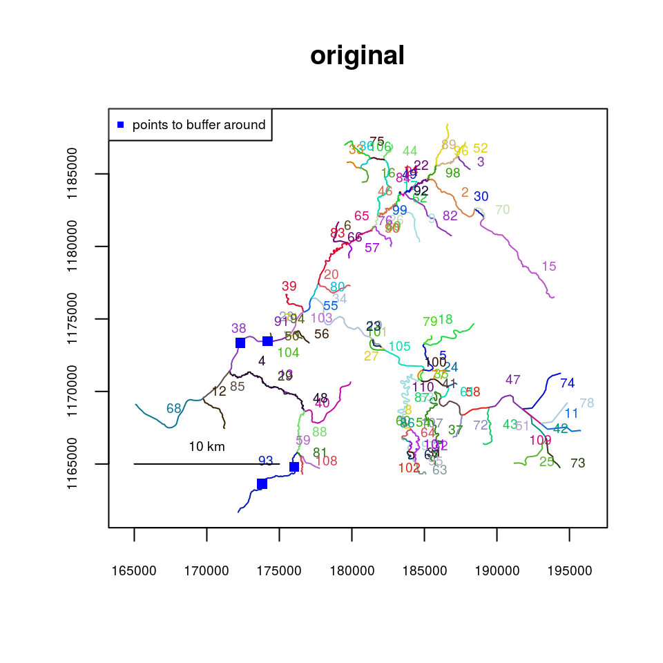
par(mfrow=c(1,3))
plot(x=Kenai3.buf1, main="snap")
points(x, y, pch=15, col=4)
plot(x=Kenai3.buf2, main="snaproute")
points(x, y, pch=15, col=4)
plot(x=Kenai3.buf3, main="buffer, dist=5000")
points(x, y, pch=15, col=4)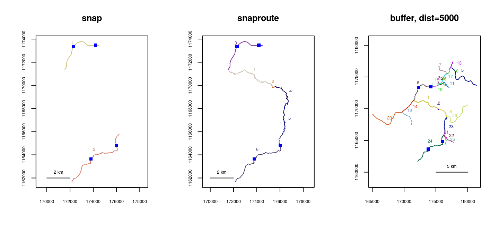
Automatically removing all segments not connected to the river network mouth can be done using removeunconnected(). This may be useful if extraneous lines are retained from an import from GIS. This function may take some time to process, and simplifying the network using dissolve() is recommended.
data(Koyukuk2)
Koy_subset <- trimriver(trimto=c(30,28,29,3,19,27,4),rivers=Koyukuk2)
Koy_subset <- setmouth(seg=1,vert=427,rivers=Koy_subset)
Koy_subset_trim <- removeunconnected(Koy_subset)
par(mfrow=c(1,2))
plot(x=Koy_subset, main="original")
plot(x=Koy_subset_trim, main="unconnected segments removed")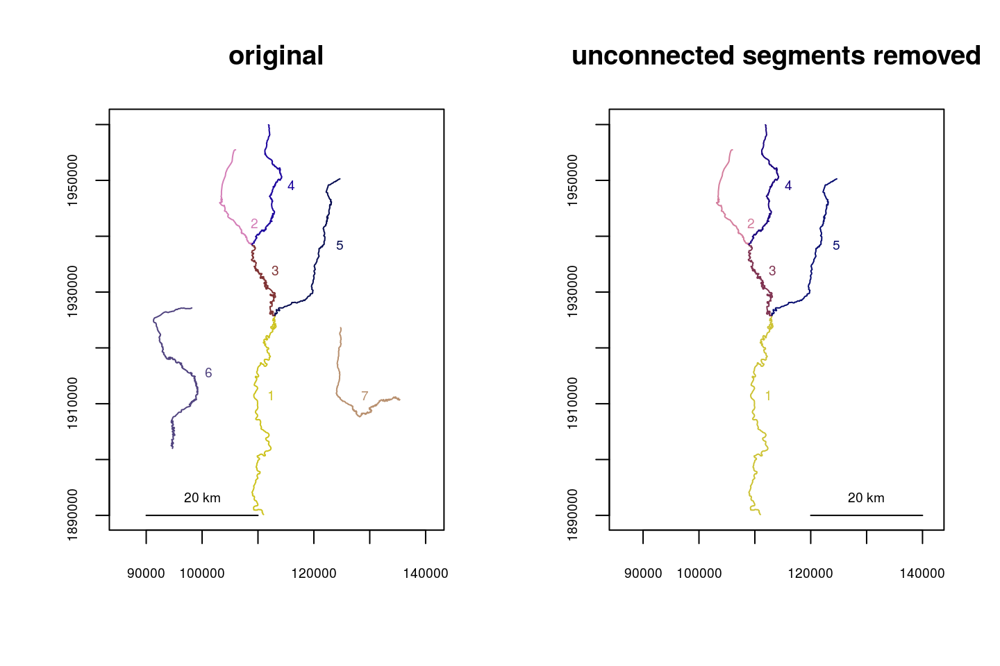
Issue: the river network contains sequential “runs” of segments that do not otherwise branch - a fix using dissolve()
Using an unnecessarily complex river network can greatly increase processing time. Runs of segments can be combined using dissolve(), which works much like a spatial dissolve within GIS.
data(Kenai2)
Kenai2_sub <- trimriver(trimto=c(26,157,141,69,3,160,2,35,102,18,64,86,49,103,61,
43,183,72,47,176), rivers=Kenai2)
Kenai2_sub_dissolve <- dissolve(rivers=Kenai2_sub)
par(mfrow=c(1,2))
plot(x=Kenai2_sub, main="original")
plot(x=Kenai2_sub_dissolve, main="dissolved")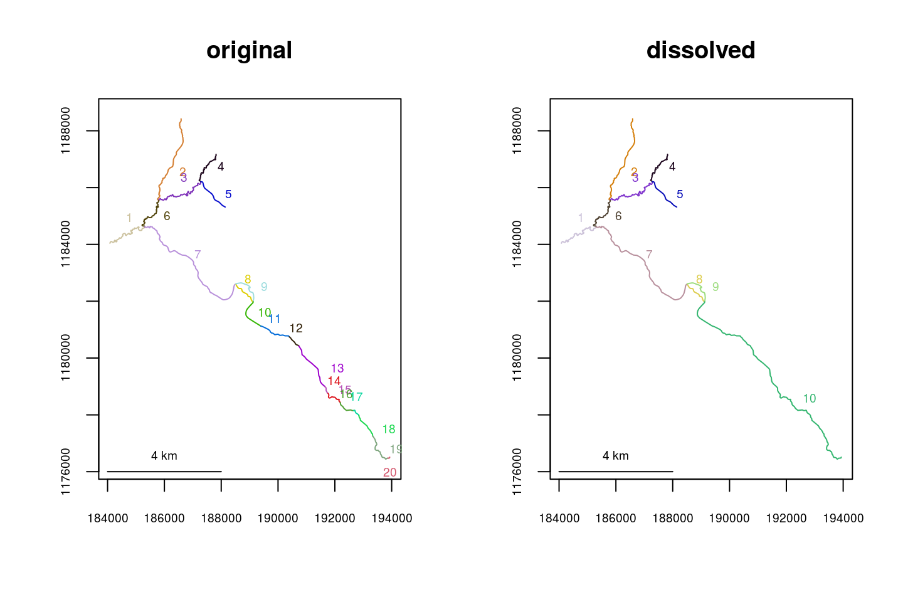
Issue: the river network segments do not break where they should - a fix using splitsegments()
This issue is problematic, as it directly affects how connectivity is detected within the river network. Without appropriate connectivity, routes and distances cannot be calculated. To address this issue, splitsegments() automatically breaks segments where another segment endpoint is detected.
In the example below, segments 7, 8, 13, and 16 need to be split in multiple places. Since connectedness is not detected for the associated tributaries, topologydots() shows the endpoints as red, or unconnected. In this case, calling splitsegments() breaks the segments in the appropriate places, allowing for the network to be connected as it should be. It is worth noting that the user can specify which segments to split, with respect to which, which may aid in processing time and specificity.
data(Koyukuk1)
Koyukuk1.split <- splitsegments(rivers=Koyukuk1)
par(mfrow=c(1,2))
topologydots(rivers=Koyukuk1, main="original")
topologydots(rivers=Koyukuk1.split, main="split")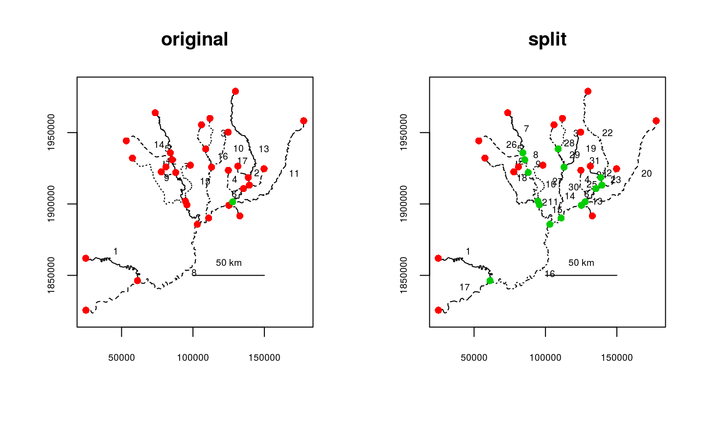
Issue: segments that should connect do not - a fix using connectsegs()
Segments (or vectors of segments) can be manually “attached” at their endpoints or closest points using connectsegs().
data(Koyukuk0)
Koyukuk0.1 <- connectsegs(connect=21, connectto=20, rivers=Koyukuk0)
par(mfrow=c(1,2))
plot(Koyukuk0, ylim=c(1930500,1931500), xlim=c(194900,195100), main="original")
topologydots(Koyukuk0, add=TRUE)
plot(Koyukuk0.1,ylim=c(1930500,1931500), xlim=c(194900,195100), main="connected")
topologydots(Koyukuk0.1, add=TRUE)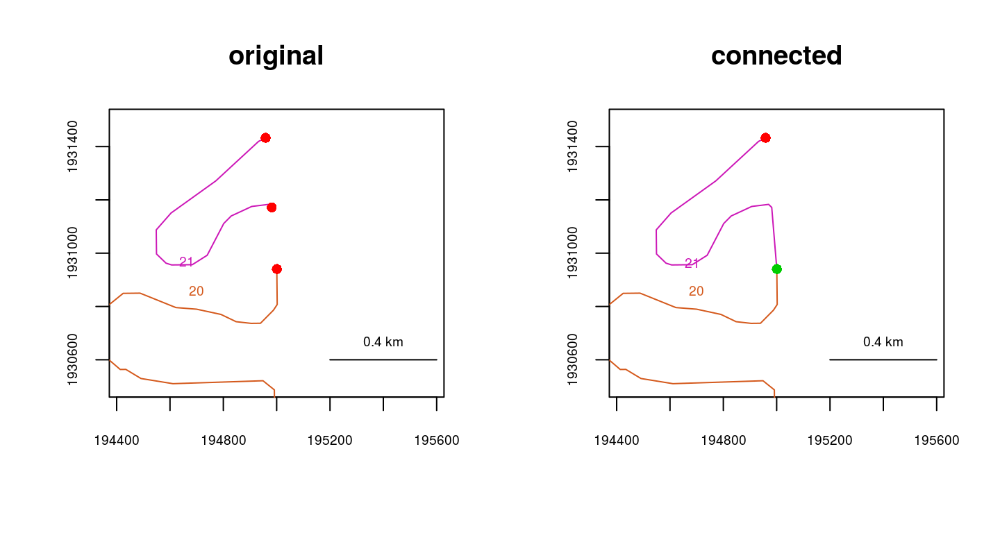
Issue: the river network contains segments that are smaller than the connectivity tolerance - a fix using removemicrosegs()
This is an issue that may be difficult to recognize, and may cause mysterious problems with network topology, sometimes preventing route calculation. These “microsegments” can be removed using removemicrosegs().
data(abstreams0)
abstreams2 <- removemicrosegs(abstreams0)Issue: A long straight-line section of the river network does not contain vertices between endpoints - a fix using addverts()
In some cases, such as when a river network contains a lake, the shapefile will contain long straight-line sections, with vertices retained only for the beginning and end. If point data exist in these regions, when they are converted to river locations, they will be snapped to the nearest vertex - in this case, one of the endpoints of the straight stretch. Since it is likely that a greater degree of precision is desired in distance calculations, addverts() provides a method of inserting additional vertices, wherever the river network contains vertices that are spaced at a greater distance than a specified threshold.
The example below first shows how the Skilak Lake section of the Kenai River network was originally read from a shapefile, with the vertices of segment 74 overlayed. The second plot shows the same section with the vertices of segment 74 overlayed, after adding vertices every 200 meters to the full river network.
data(Kenai3)
Kenai3split <- addverts(Kenai3, mindist=200)
par(mfrow=c(1,2))
zoomtoseg(seg=c(47,74,78), rivers=Kenai3, main="segment 74 vertices")
points(Kenai3$lines[[74]])
zoomtoseg(seg=c(47,74,78), rivers=Kenai3split, main="adding points every 200m")
points(Kenai3split$lines[[74]]) 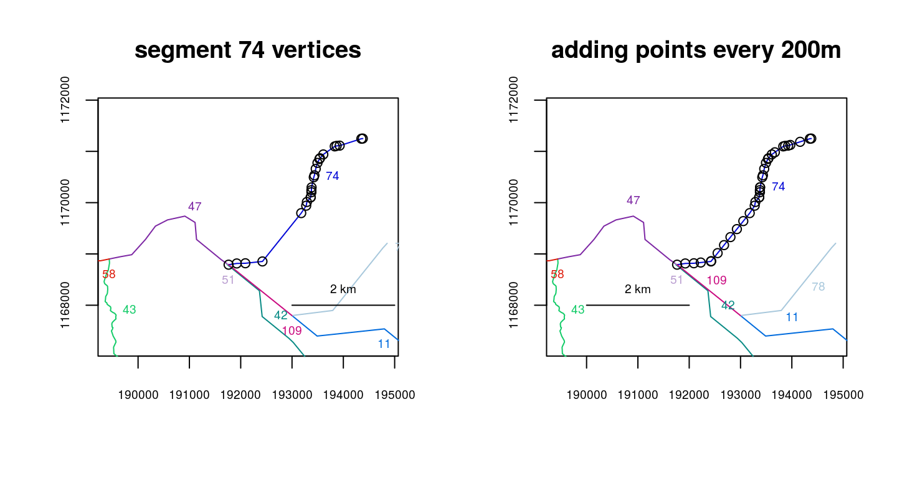
Dealing with braided channels
Most of the utility of the ‘riverdist’ package was designed assuming a truly dendritic river network, in which there is no braiding of channels and only one path exists between one river location and another. If this is not the case and a braided network is used, the user is strongly cautioned that the distances reported may be inaccurate. In the event of braiding, the shortest route between two locations is returned, but the possibility exists that this may not be the route desired.
Checking for braiding using checkbraided()
Braiding can be checked for in a river network as a whole using checkbraided(), which can take a while to run on a large or complex network. In the example below, no braiding exists in the Gulkana River network, and severe braiding exists in the Killey River West channel network.
data(Gulk, KilleyW)
par(mfrow=c(1,2))
plot(x=Gulk, main="Gulkana River")
plot(x=KilleyW, ylim=c(1164500, 1168500), main="Killey River West")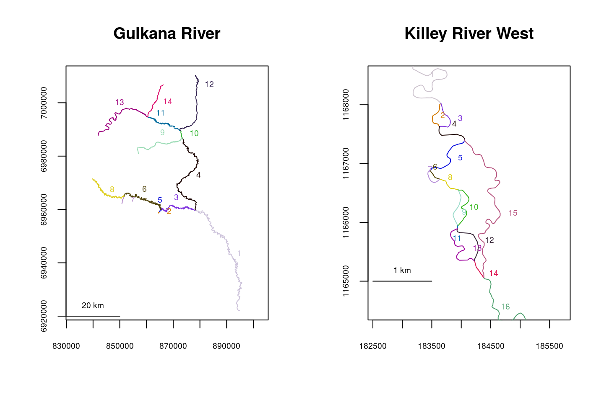
checkbraided(rivers=Gulk, progress=FALSE)##
## No braiding detected in river network.checkbraided(rivers=KilleyW, progress=FALSE)##
## Braiding detected in river network. Distance measurements may be inaccurate.Braiding can also be checked for specific routes. In the example below, braiding does not exist between segments 1 and 7, but does exist between segments 1 and 5.
Kenai3.subset <- trimriver(trimto=c(22,2,70,30,15,98,96,89,52,3), rivers=Kenai3)## Note: any point data already using the input river network must be re-transformed to river coordinates using xy2segvert() or ptshp2segvert().plot(x=Kenai3.subset)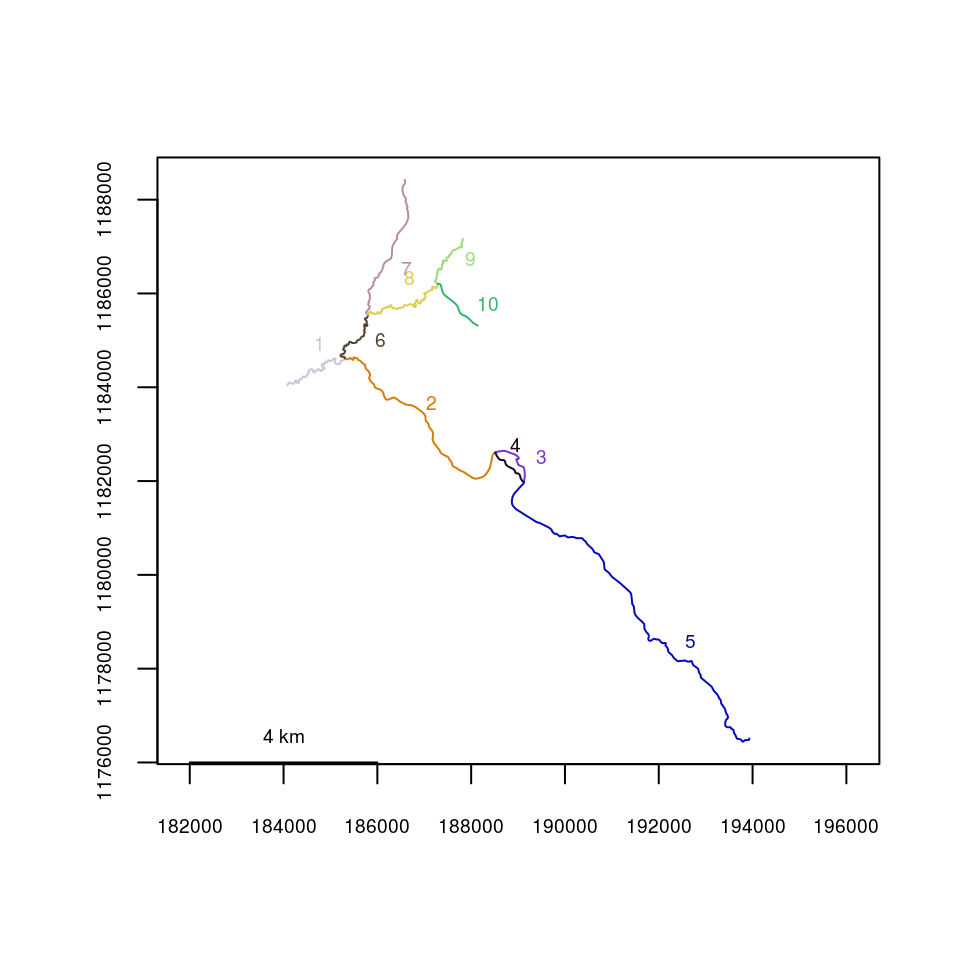
checkbraided(startseg=1, endseg=7, rivers=Kenai3.subset)## No braiding detected between segments.checkbraided(startseg=1, endseg=5, rivers=Kenai3.subset)## Braiding detected between segments. Distance measurements may be inaccurate.Investigating multiple routes using riverdistancelist()
If the user wishes to explore the possibility of multiple routes beween two locations, routelist() detects a list of routes from one segment to another, which is applied by function riverdistancelist() to calculate the distance along the routes that were detected. This was by means of randomization in a previous version, but now uses an algorithm that returns a complete list of possible routes. The riverdistancelist() function, shown below, returns a list of all routes detected by ascending distance, and the corresponding distances.
Killey.dists <- riverdistancelist(startseg=1,endseg=16,startvert=25,endvert=25,
rivers=KilleyW,reps=1000)
Killey.dists # 18 routes are detected.## $routes
## $routes[[1]]
## [1] 1 2 4 15 16
##
## $routes[[2]]
## [1] 1 2 4 5 6 8 9 11 12 14 16
##
## $routes[[3]]
## [1] 1 3 4 15 16
##
## $routes[[4]]
## [1] 1 3 4 5 6 8 9 11 12 14 16
##
## $routes[[5]]
## [1] 1 2 4 5 7 8 9 11 12 14 16
##
## $routes[[6]]
## [1] 1 2 4 5 6 8 10 11 12 14 16
##
## $routes[[7]]
## [1] 1 3 4 5 7 8 9 11 12 14 16
##
## $routes[[8]]
## [1] 1 3 4 5 6 8 10 11 12 14 16
##
## $routes[[9]]
## [1] 1 2 4 5 6 8 9 11 13 14 16
##
## $routes[[10]]
## [1] 1 2 4 5 7 8 10 11 12 14 16
##
## $routes[[11]]
## [1] 1 3 4 5 6 8 9 11 13 14 16
##
## $routes[[12]]
## [1] 1 3 4 5 7 8 10 11 12 14 16
##
## $routes[[13]]
## [1] 1 2 4 5 7 8 9 11 13 14 16
##
## $routes[[14]]
## [1] 1 2 4 5 6 8 10 11 13 14 16
##
## $routes[[15]]
## [1] 1 3 4 5 7 8 9 11 13 14 16
##
## $routes[[16]]
## [1] 1 3 4 5 6 8 10 11 13 14 16
##
## $routes[[17]]
## [1] 1 2 4 5 7 8 10 11 13 14 16
##
## $routes[[18]]
## [1] 1 3 4 5 7 8 10 11 13 14 16
##
##
## $distances
## [1] 6044.006 6068.785 6147.616 6172.396 6230.349 6272.589 6333.960
## [8] 6376.199 6386.100 6434.153 6489.710 6537.763 6547.664 6589.903
## [15] 6651.274 6693.514 6751.468 6855.078The shortest and longest routes detected are mapped below.
par(mfrow=c(1,2))
plot(x=KilleyW, ylim=c(1164500, 1168500), main="shortest route")
riverdistance(startvert=25, endvert=25, path=Killey.dists$routes[[1]],
rivers=KilleyW, map=TRUE, add=TRUE)## [1] 6044.006plot(KilleyW, ylim=c(1164500, 1168500), main="longest route")
riverdistance(startvert=25, endvert=25, path=Killey.dists$routes[[18]],
rivers=KilleyW, map=TRUE, add=TRUE)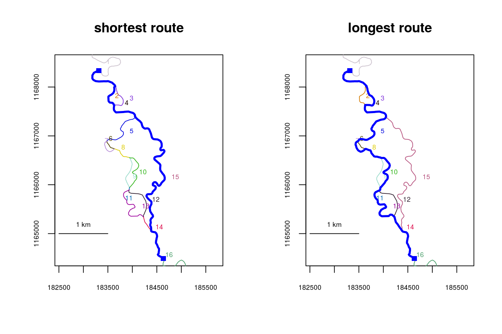
## [1] 6855.078It is worth noting that the default functions for route and distance calculation do return the shortest route, in the presence of multiple possible routes. The default-calculated route is shown below, and is the same as the shortest route determined by riverdistancelist().
detectroute(start=1, end=16, rivers=KilleyW)## [1] 1 2 4 15 16Killey.dists$routes[[1]] #calculated above## [1] 1 2 4 15 16